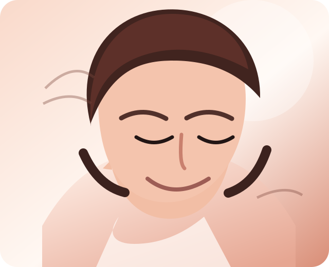

Classic szett
Letisztult, természetes hatás, ami finoman nyitja a tekintetet.
12 900 Ft-tólTermészetes. Precíz. Ragyogó.
Finoman kiemelt tekintet, igényes szempilla szolgáltatások és nyugodt szépségpillanatok Esztivel.


Rólam
Árendás Eszter vagyok, sminkes és szempilla stylist. 2018 óta foglalkozom szempillaépítéssel, és azóta is folyamatosan képzem magam, hogy vendégeim számára igényes, tartós és személyre szabott szolgáltatást nyújthassak.
Hiszem, hogy a tökéletes szempilla nem csupán szép, hanem harmonikusan illeszkedik az arc karakteréhez, a szemformához és a vendég életstílusához. Minden szettet egyedileg, az elképzeléseidhez és adottságaidhoz igazítok.
@brill_lash_and_beautySzolgáltatások
Letisztult, természetes hatás, ami finoman nyitja a tekintetet.
12 900 Ft-tólKönnyedebb dúsítás, elegáns mindennapi viselethez.
15 900 Ft-tólLátványosabb, mégis finom hatás azoknak, akik szeretik a hangsúlyt.
18 900 Ft-tólA szett frissítése, hogy a forma és a tartósság újra szép legyen.
9 900 Ft-tólSaját pillák látványos emelése természetes, ápolt eredménnyel.
11 900 Ft-tólElőtte - utána
Miért engem válassz?
Minden szettet a szemformádhoz, stílusodhoz és természetes adottságaidhoz igazítok.
Gondosan válogatott, professzionális termékekkel dolgozom a tartós és kényelmes viseletért.
2018 óta képzem magam, hogy mindig naprakész technikákkal dolgozhassak.
A kezelés nálam nem csak szépülés, hanem egy kis kikapcsolódás is.
Vélemények
Gyönyörű, természetes hatás. Pont olyan lett, amilyet szerettem volna.
Nagyon precíz munka és kellemes hangulat. A pilláim hetekig szépek maradtak.
Eszti kedves, figyelmes, és minden alkalommal rám szabja a szettet.
Kapcsolat
Időpontfoglalásra a weboldalon keresztül vagy Instagram üzenetben van lehetőség. A kezelések alatt teljes figyelmemet a vendégeimre fordítom, ezért előfordulhat, hogy nem tudok azonnal válaszolni. Minden megkeresésre a lehető legrövidebb időn belül reagálok.
Fontos információk
Az időpont véglegesítése új vendégek esetében 50% előleg befizetésével történik.
Amennyiben a lefoglalt időpontot nem tudod igénybe venni, kérlek legalább 24 órával korábban jelezd.
A kezelés előtt 24 órán belül lemondott időpontok, illetve meg nem jelenés esetén az előleg visszatérítésére nincs lehetőség.
Az időpont lefoglalásával a szolgáltatási feltételek elfogadásra kerülnek.
Fontos számomra a minőség és a vendégeim elégedettsége, ezért munkámra 7 nap garanciát vállalok.
Amennyiben a szett az általam végzett munka hibájából jelentős mértékben idő előtt hullik ki, a szükséges korrekciót díjmentesen elvégzem.
Kérlek, hogy a kezelésre egészséges állapotban érkezz. A saját és más vendégek biztonsága érdekében fertőző vagy aktív szemkörnyéki megbetegedés esetén a kezelés nem végezhető el.
A műszempilla építés során professzionális, kozmetikai célra fejlesztett szempillaragasztót használok. A ragasztó megfelelő alkalmazás mellett biztonságos és tartós rögzítést biztosít, azonban érzékenység vagy allergiás reakció ritka esetben előfordulhat.
Amennyiben korábban bármilyen kozmetikai termékre, ragasztóra vagy szemkörnyéki készítményre érzékenységet tapasztaltál, kérlek jelezd a konzultáció során.
Nem, a kezelés fájdalommentes. A legtöbb vendég számára inkább pihentető élmény.
Az új szett típustól függően általában 2-3 órát vesz igénybe.
Általában 3 hetente ajánlott, hogy a szett szép és egyenletes maradjon.
Igen, de olajmentes termékek használata javasolt, és kerülni kell a szempillaspirált.
Ritkán igen. Ez egyéni érzékenységtől függ, ezért minden fontos tudnivalót átbeszélünk a kezelés előtt.
Árendás Eszter
Sminkes & Szempilla Stylist
“A szépség a részletekben rejlik.”